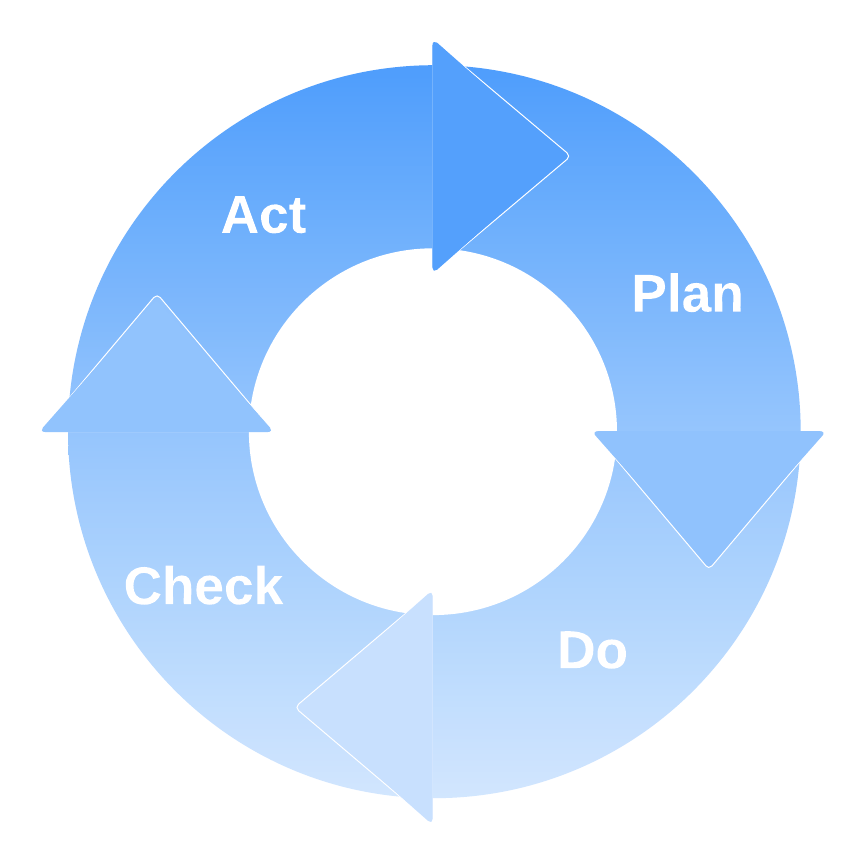
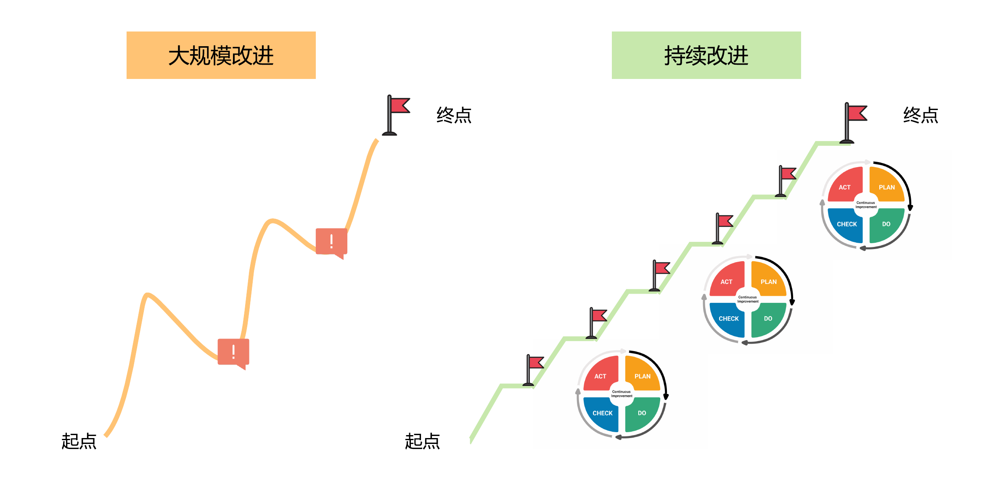

- 00 开篇词 从默默无闻到风靡全球，DevOps究竟有什么魔力？.md.html
- 01 DevOps的“定义”：DevOps究竟要解决什么问题？.md.html
- 02 DevOps的价值：数字化转型时代，DevOps是必选项？.md.html
- 03 DevOps的实施：到底是工具先行还是文化先行？.md.html
- 04 DevOps的衡量：你是否找到了DevOps的实施路线图？.md.html
- 05 价值流分析：关于DevOps转型，我们应该从何处入手？.md.html
- 06 转型之路：企业实施DevOps的常见路径和问题.md.html
- 07 业务敏捷：帮助DevOps快速落地的源动力.md.html
- 08 精益看板（上）：精益驱动的敏捷开发方法.md.html
- 09 精益看板（下）：精益驱动的敏捷开发方法.md.html
- 10 配置管理：最容易被忽视的DevOps工程实践基础.md.html
- 11 分支策略：让研发高效协作的关键要素.md.html
- 12 持续集成：你说的CI和我说的CI是一回事吗？.md.html
- 13 自动化测试：DevOps的阿克琉斯之踵.md.html
- 14 内建质量：丰田和亚马逊给我们的启示.md.html
- 15 技术债务：那些不可忽视的潜在问题.md.html
- 16 环境管理：一切皆代码是一种什么样的体验？.md.html
- 17 部署管理：低风险的部署发布策略.md.html
- 18 混沌工程：软件领域的反脆弱.md.html
- 19 正向度量：如何建立完整的DevOps度量体系？.md.html
- 20 持续改进：PDCA体系和持续改进的意义.md.html
- 21 开源还是自研：企业DevOps平台建设的三个阶段.md.html
- 22 产品设计之道：DevOps产品设计的五个层次.md.html
- 23 持续交付平台：现代流水线必备的十大特征（上）.md.html
- 24 持续交付平台：现代流水线必备的十大特征（下）.md.html
- 25 让数据说话：如何建设企业级数据度量平台？.md.html
- 26 平台产品研发：三个月完成千人规模的产品要怎么做？.md.html
- 27 巨人的肩膀：那些你不能忽视的开源工具.md.html
- 28 迈向云端：云原生应用时代的平台思考.md.html
- 29 向前一步：万人规模企业的DevOps实战转型案例（上）.md.html
- 30 向前一步：万人规模企业的DevOps实战转型案例（下）.md.html
- 期中总结 3个典型问题答疑及如何高效学习 (1).md.html
- 期中总结 3个典型问题答疑及如何高效学习.md.html
- 期末总结 在云时代，如何选择一款合适的流水线工具？.md.html
- 特别放送（一）成为DevOps工程师的必备技能（上）.md.html
- 特别放送（三）学习DevOps不得不了解的经典资料.md.html
- 特别放送（二）成为DevOps工程师的必备技能（下）.md.html
- 特别放送（五）关于DevOps组织和文化的那些趣事儿.md.html
- 特别放送（四）Jenkins产品经理是如何设计产品的？.md.html
- 结束语 持续改进，成就非凡！.md.html
- 捐赠
20 持续改进：PDCA体系和持续改进的意义
你好，我是石雪峰。
今天是“工程实践篇”的最后一节课，如果你现在问我，在这么多的工程实践中，什么能力是团队在推行DevOps时最应该具备的？我会毫不犹豫地告诉你，那就是持续改进。
很多同学在留言区问我：“雪峰老师，我们公司已经搭建了Gitlab，也跟Jenkins实现了打通，做到了自动化的编译打包和发布工作。可是接下来，我们还有啥可以做的呢？我感到很迷茫啊。”
所以，这就引申出来一个问题：“一个团队做到什么程度，才算是达到了DevOps呢？”
每每遇到这样的问题，我就会回想起，几年前我去国内一家知名公司的杭州总部交流的经历。
当时，负责跟我们对接的是这家公司DevOps的主要推动人，可以说，他见证了这家巨头公司的DevOps转型全过程。在交流时，我问了他一个问题，他的回答让我印象特别深刻。
我问他：“你觉得，你们公司是在什么时候实现DevOps转型的呢？”他想了想，说：“现在，我们公司已经没有专职的测试和专职的运维了，基础架构也早就容器化了。这些事情，都是业务发展到一定阶段之后自然而然发生的，只不过，DevOps火起来以后，我们才发现，原来我们一直在做的就是DevOps。所以，很难说在哪个时间点完成了DevOps转型。对我们来说，最重要的就是团队具备了一种能力，就是始终能够找到新的突破，持续追求更好的状态。”
我想，这段话应该非常能够代表一个团队实施DevOps转型时期望达到的状态吧。
其实，如果你有机会去跟谷歌、Netflix的工程师交流一下，你就会发现，这些业界DevOps做得特别牛的公司，内部都不怎么提DevOps的概念。因为，他们早就对DevOps的这些实践习以为常了。很多知名的工具平台，都是内部员工自发地为了解决一些问题而开发出来的。
比如，像Gerrit这种非常流行的代码在线评审和管理工具，最开始就是为了解决谷歌内部缺少一种基于Git并且具备权限管控的代码评审工具的问题，才被开发出来的，你可以了解下这段历史。
你看，遇到一个钉子，从而造个锤子，和拿着一把锤子，满世界找钉子就是两种截然不同的做法。但很多时候，我们采用的都是后一种做法，手里拿着一堆锤子，却找不到钉子在哪里。
所以，如果一定要让我来回答，DevOps做到什么程度，就算是实现转型落地了？那么，我的回答是，核心就是团队已经具备了持续改进的能力，而不只是简简单单地引入了几个工具，建立了几个度量指标而已。
说到这儿，你可能会说，这个所谓的持续改进，怎么感觉无处不在呢？似乎很多工程实践的落地方法中，最后一步都是持续改进。那么，持续改进的意义到底是什么呢？为什么一切活动的终极目标都是持续改进呢？
这是因为，每家公司面临的问题都不一样，从0到1的过程相对比较简单，可以对照着工程实践，快速地引入工具，建立流程，补齐能力短板。但是，从1到N的过程，就需要团队根据业务需要，自行识别改进目标了。
还以最开始那个问题为例，基于Gitlab和Jenkins搭建了自动化构建和发布的能力之后，你觉得还有哪些可行的改进方向呢？比如，测试是否注入其中了呢？是否建立了质量门禁机制呢？数据库变更是否实现了自动化呢？构建发布的速度是否足够理想，构建资源是否存在瓶颈？
能想到的方向有很多，但哪个才是现阶段最重要、价值最大化的点，说到底，还是要看业务的需求，没办法泛泛而谈。
谈到持续改进，有一个非常著名的方法体系，叫作PDCA，也称为戴明环。没错，你从名称就能看出，这套方法体系同样来自于质量管理大师戴明博士。PDCA是四个英文单词的缩写，也就是Plan（计划）、Do（实施）、Check（检查）和Action（行动）。
PDCA提供了一套结构化的实施框架，任何一项改进类工作，都可以划分为这四个实施阶段。通过PDCA循环的不断迭代，驱动组织进入一种良性循环，不断识别出新的待改进问题。针对这些问题，首先要进行根因分析，制定具体的实施计划。然后，不定期地检查实施的结果和预期目标是否一致。最后，要对改进结果进行复盘，把做得好的地方保留下来，把做得不好的地方纳入下一阶段的循环中，继续改进。

这个方法听起来也没什么复杂的，每个人都能够理解，关键在于是否真正地用心在做。
我再给你分享一个真实的例子。
大概两年前，我参与到一家中型企业的DevOps转型工作当中。这家企业刚开始接触DevOps时的状态呢，我就不细说了，反正就是基本啥都没有。代码库使用的是SVN，构建打包都在本地完成，版本发布要两个月，而且经常是多版本并行的节奏，光同步代码就需要专人完成。
经过半年多的改造之后，团队内部的整体工具链体系初具规模，版本发布节奏也缩短到了一个月一次，团队对达到的成绩非常满意。
当然，这并不是重点，重点是，我上个月又碰到了这个项目的负责人。她跟我说，他们现在的发布节奏已经实现了两周一次，甚至不定期还有临时版本发布。我很好奇，他们究竟是怎么做到的。
原来，最开始导入改进方案的时候，我给项目组提到过容器化的思路，但是因为当时客观条件不具备，就没有继续推进下去。没想到，在短短不到一年的时间里，他们已经实现了容器化部署，自建的PaaS平台也有模有样，即便是跟很多大公司相比，也毫不逊色。
她说：“这段DevOps转型的过程，带给我们的不仅仅是一些常见的工程实践和工具平台，更重要的是一双总能发现不完美的眼睛和追求极致的态度，以及对这类问题的认知方法。这些驱动我们不断地找到新的方法解决新的问题。”
的确，很多工程实践和工具平台，在公司内部其实只是一小步，之后遇到的问题和挑战还会有很多。这时候，我们能够依靠的终极奥义就是持续改进的思想，而构建持续改进的核心，就在于构建一个学习型组织。
那么，究竟要从哪里开始学习呢？在学习和改进的过程中又有哪些比较推荐的做法呢？我总结了四个实践，你可以参考一下。
鼓励正向回溯和总结
从失败中学习是我们从小就懂的道理。一个团队对待故障的态度，很大程度上就反映了他们对于持续改进的态度。系统出现故障是谁都不愿意遇到的事情，但在真实世界中，这是没法避免的。
在很多公司里面，出现故障之后，有几种常见的做法：
- 把相关方拉到一起，定级定责，也就是确定问题级别和主要的责任方；
- 轻描淡写地回个改进邮件，但是没有明确的时间节点，即便有，也没人跟踪；
- 把问题归结为不可复现的偶发事故，最后不了了之。
与这些做法相比，更好的方法是建立一种正向回溯和总结的机制。也就是说，当问题发生之后，事先准备一份详尽的故障分析报告，并拉上相关方一起彻底分析问题的根因，并给出改进任务的具体时间点。
故障回溯并不一定以确定责任为第一要务，更重要的是，要识别系统流程中的潜在问题和漏洞，并通过后续机制来进行保障，比如增加测试用例、增加产品走查事项等等。
其实，大到线上故障，小到日常错误，都值得回溯和总结。
比如，我们每天都会遇到形形色色的编译错误，如果每个人遇到同样的问题，都要爬一次同样的坑，显然是非常低效的。
这就需要有团队来负责收集和总结这些常见的错误，并提取关键错误信息和常见解决方法，形成一个案例库。同时，在构建系统中嵌入一个自动化服务，下次再有人遇到编译错误的时候，就可以自动匹配案例库，并给他推送一个问题分析报告和解决建议，帮助团队成员快速解决问题。
这样，随着团队智慧的不断积累，越来越多的问题会被识别出来，从而实现组织知识共享和研发辅助的能力，这在很多大公司里面都是一个重点建设方向。仔细想想，这本身就是一个PDCA的过程。
不过，这里要补充一点，团队实施持续改进的过程，不应该是一次大而全的变革，而应该是一系列小而高频的改进动作。因为大的变革往往影响众多，很容易半途而废，而小的改进更加温和，也更加容易成功。为了方便你理解，我跟你分享一张示意图。

预留固定时间进行改进
很多时候，团队都处于忙碌的状态，时间似乎成了推行DevOps的最大敌人。于是，团队就陷入了一种太忙以至于没时间改进的状态中。
如果团队选择在同等时间内去做更多的功能，那就说明，至少在当前这个阶段，业务开发的重要性要高于DevOps建设的重要性。
可问题是，业务的需求是没有止境的。有时候，我去问一线员工：“你觉得有什么地方，是DevOps可以帮你的吗？”要么大家会说“没什么特别的，现在挺好”，要么就是一些非常琐碎的点。实际上，这只能说明，要么是没想过这个事情，要么就是不知道还有更好的做法。但是，如果不能调动一线员工的积极性，持续改进也就无从谈起了。
所以，正确的做法是，在团队的日常迭代中，事先给改进类工作预留一部分时间，或者是在业务相对不那么繁忙的时候（比如大促刚刚结束，团队在调整状态的时候），在改进工作上多花些时间。
这些工作量主要用于解决非功能需求、技术改进类问题，比如修复技术债务、单元测试用例补充、度量识别出来的改进事项等。通过将这部分改进时间固定下来，可以培养团队持续改进的文化。
我比较推荐的做法是，在团队的Backlog中新增一类任务，专门用于记录和跟踪这类持续改进的内容。在迭代计划会议上，对这类问题进行分析，并预估工作量，保证团队有固定的时间来应对这些问题。
另外，很多公司也开始流行举办Hackathon Day（黑客马拉松），是说在有限的时间里通过编程实现自身的想法和创意，在这个过程中，充满了积极探索的精神、自由散发的思维和挑战极限的理念，通过团队协作与互相激发，实现创意到开发的全过程。
我们团队最近也在准备参加今年的黑客马拉松，希望通过这个途径寻求合作共建，除了解决内部效率提升的“老大难”问题，还能提升团队成员的积极性，在更大的舞台上展现DevOps的价值，一举两得。
在团队内部共享业务指标
很多时候团队成员都像是临时工一样，对于自己所负责的需求和业务的表现一概不知。如果团队成员对一件事情没有归属感，那么又如何激发他们的责任感和自我驱动意识呢？
所以，对于业务的指标和表现，需要尽可能地在团队内部做到透明，让团队成员可以接触真实世界的用户反馈和评价，以及业务的度量信息。
在一个新功能开发完成上线之后，要能实时查看这个需求的上线状态。如果需求分析时已经关联了业务考核指标，那么，同样可以将该业务关联的指标数据进行展示。这样，研发就会知道自己交付的内容有多少问题，用户的真实反馈是怎样的，从而促使团队更多地站在用户的视角思考问题。
除了业务指标，DevOps的指标体系也应该对内部公开透明。大家可以查看自己所在团队的表现，以及在公司内部的整体水平。
适当的侧向压力，会促使大家更加主动地接受改进工作，并且通过度量数据展示改进的效果，从而形成正向的循环。
激励创造性，并将价值最大化
每个团队中都不乏有创新意愿和思想的员工，他们总是能从墨守成规的规范中找到可以进行优化的点。
比如，之前，我们团队的一个测试人员发现，日常埋点测试费时费力，而且没有数据统计。于是，她就自己利用业余时间开发了一个小工具，用工具来承载这部分工作，效率大幅提升。
如果更多人知道这样的创新，并且在更大范围内使用，不仅可以提升更多人的效率，让团队整体受益，而且还可以减少类似的重复建设，让有想法的员工一起参与工具优化。
比较好的做法是，在团队成员的绩效目标中，增加对团队贡献和技术创新的要求，在团队内部鼓励创新类工作。另外，在团队内部建立对应的选拔和激励机制，为好的想法投入资源，把它们变成可以解决类似问题的工具。
很多公司也开始注意到这种内部知识复用的重要性，所以，无论是代码库开源，还是公共基础组件的市的建设，甚至是公司级的平台治理系统，都可以帮助你快速地复用已有的能力，避免一直重复造轮子。
总结
就像每个工程实践的终点都是持续改进一样，我们专栏的“工程实践篇”同样以持续改进的实践作为收尾。
我始终认为，团队是否建立了持续改进的文化，是评估团队的DevOps实践效果的重要参考。在这一讲中，我给你介绍了PDCA的持续改进方法体系，也就是通过计划、实施、检查、行动这四个步骤的持续迭代，不断把团队推向更优的状态，促使团队进入正向发展的车道。
另外，我给你介绍了四个持续改进落地的方法，包括在失败中总结和学习，建立固定的改进时间，在团队内部共享指标、培养团队的责任感，以及激发团队的创造力并将价值最大化。这些方法的核心就是想打造一个学习型的组织和文化，给DevOps的生根发芽提供丰饶的养分。
从下一讲开始，我们将进入“工具实践篇”，我会给你介绍一些核心工具的设计思想、建设路径，以及一些常见开源工具的使用方法等，敬请期待。
思考题
除了我提到的这四种持续改进的手段，你所在的公司，有什么活动可以促进持续改进文化的建设吗？
欢迎在留言区写下你的思考和答案，我们一起讨论，共同学习进步。如果你觉得这篇文章对你有所帮助，也欢迎你把文章分享给你的朋友。
© 2019 - 2023 Liangliang Lee. Powered by gin and hexo-theme-book.